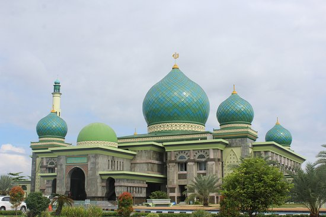

Daftar pustaka:
https://makananoleholeh.com/makanan-khas-pekanbaru-riau/
https://cookpad.com/id/resep/2972487-miso
https://detakkampar.co.id/blog/resep-makanan-ikan-selais-asap-khas-provinsi-riau/
https://cookpad.com/id/resep/9354517-gulai-ikan-patin-khas-riau
https://cookpad.com/id/resep/734729-nasi-lemak-khas-riau?via=search&search_term=nasi%20lemak%20khas%20riau
https://www.idntimes.com/food/recipe/reza-iqbal/resep-mie-lendir-kuliner-khas-riau/3
https://www.idntimes.com/food/dining-guide/annisa-fadillah/minuman-segar-khas-riau-c1c2/5
https://www.fimela.com/lifestyle-relationship/read/4093264/resep-es-laksamana-mengamuk-segar
https://lifestyle.okezone.com/read/2014/08/12/306/1023118/es-sirup-mak-inang-sayang
https://20160102162fitrianatasyasite.wordpress.com/2016/09/26/resep-es-lancang-kuning/
http://yentit.com/resep-es-tebu-nostalgia/
Sedikit sejarah pekanbaru
Nama Pekanbaru dahulunya dikenal dengan nama "Senapelan" yang pada saat itu dipimpin oleh seorang Kepala Suku disebut Batin. Daerah yang mulanya sebagai ladang, lambat laun menjadi perkampungan. Kemudian perkampungan Senapelan berpindah ke tempat pemukiman baru yang kemudian disebut Dusun Payung Sekaki yang terletak di tepi muara sungai Siak.
Nama Payung Sekaki tidak begitu dikenal pada masanya melainkan Senapelan. Perkembangan Senapelan berhubungan erat dengan perkembangan Kerajaan Siak Sri Indrapura. Semenjak Sultan Abdul Jalil Alamudin Syah menetap di Senapelan, beliau membangun istananya di Kampung Bukit berdekatan dengan perkampungan Senapelan. Diperkirakan istana tersebut terletak di sekitar Mesjid Raya sekarang. Sultan Abdul Jalil Alamudin Syah mempunyai inisiatif untuk membuat Pekan di Senapelan tetapi tidak berkembang. Usaha yang telah dirintis tersebut kemudian dilanjutkan oleh putranya Raja Muda Muhammad Ali di tempat baru yaitu disekitar pelabuhan sekarang.